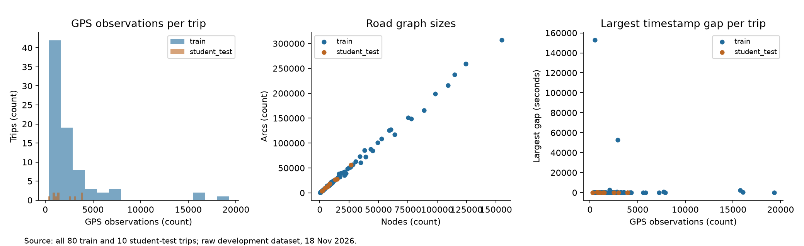
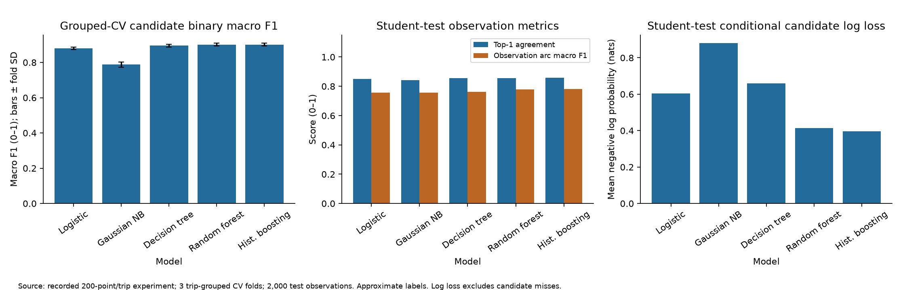
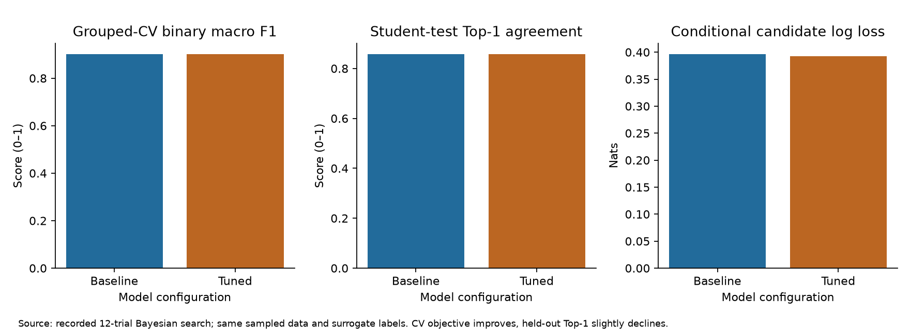
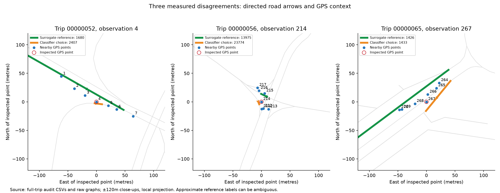
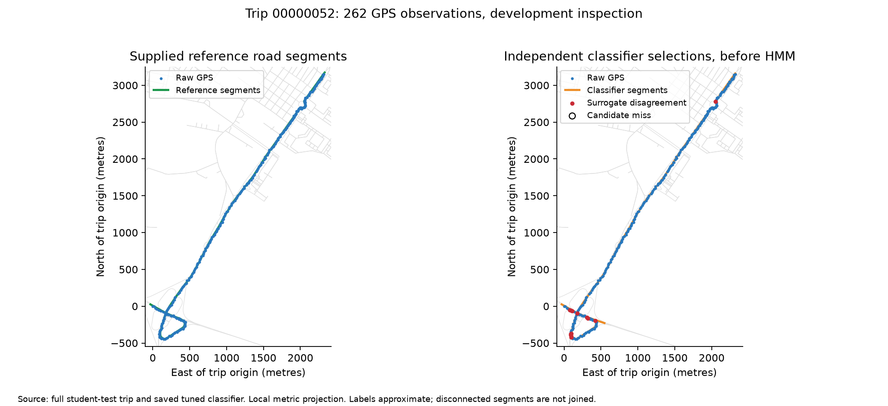
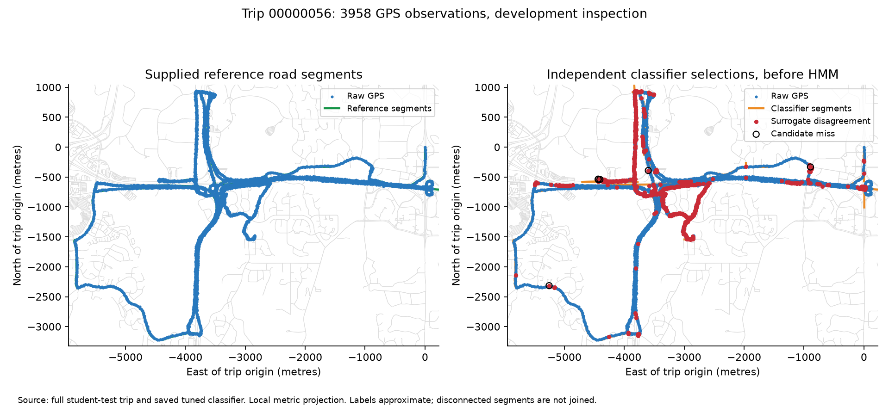
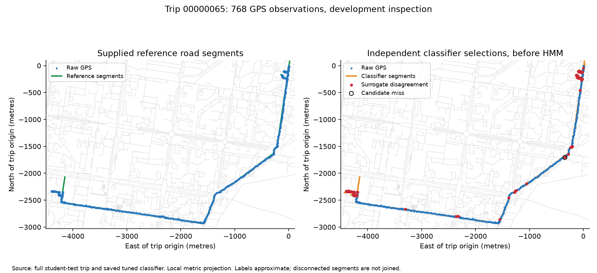

PathSnap development evidence
All numbers measured; surrogate labels; classifier only, before HMM.
01_data_overview.png

02_model_comparison.png

03_tuning_comparison.png

04_disagreement_closeups.png

map_00000052.png

map_00000056.png

map_00000065.png
